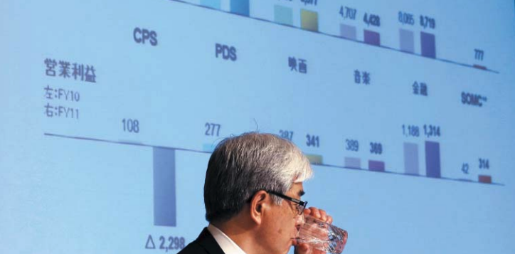

일본의 간판 전자기업인 소니가 한없이 추락하고 있다. 소니는 지난 2011 회계연도에 4570억엔(57억달러)의 적자를 냈다. 2008년 이후 4년 연속 적자 행진이다. 삼성전자와의 경쟁에서 밀린 데 이어 엔고현상까지 겹쳤기 때문이란 분석이 나오고 있다. 하지만 소니를 비롯한 샤프, 파나소닉 등 일본 기업들이 고전하는 근본 이유는 ‘법인 자본주의’라는 일본의 독특한 기업 지배구조에서 찾아볼 수 있다.
일본 법인 자본주의에선 주주 기업들이 경영 관여 안 해
나라마다 기업들의 전략과 행동이 다른 이유는 그 나라의 환경·문화 등의 차이도 있지만, 지배구조 차이 때문이기도 하다. 지배구조(Governance Structure)란 기업의 주인이 누구인가를 나타내는 구조를 말한다. 지배구조 관점에서 보면 미국은 주주가 기업의 주인인 ‘주주 자본주의’이다. 따라서 기업들은 매출이나 시장 점유율보다는 이익이나 주가에 관심을 더 기울인다. 반면 한국은 ‘오너 자본주의’다. 오너의 관심과 지시에 따라 기업의 전략과 행동이 달라진다.
일본은 미국이나 한국과 지배구조가 다르다. 기업 주식을 다른 기업들이 서로 보유하는 ‘법인 자본주의’ 형태를 취하고 있다. 즉 다른 기업들이 기업의 주인인 것이다.
이는 일본 기업들이 특정 오너의 혈연관계에 의해 주식을 보유하기보다는, 넓은 의미의 집안(일본에서는 이를 ‘이에’라고 한다)의 테두리 안에서 관련 기업들이 서로 모여 있고 이 기업들이 주식을 나눠 갖고 있기 때문이다. 세계 2차대전 이후 일본의 재벌그룹들이 강제 해체되면서, 기업 간 상호 주식보유가 촉진돼 법인 자본주의가 굳어졌다.
법인 자본주의에서는 한 기업이 주주로 있는 다른 회사의 경영에 크게 관여하지 않는다. 주식이 분산돼 있는 데다 그 회사도 자기 회사의 주식을 동시에 갖고 있기 때문이다. 다만 그 회사의 존립이 위태로울 때에만 경영에 관여한다. 주식이 휴지조각이 될 가능성을 막기 위해서다. 일본에선 이를 ‘최후의 심판자’로서의 기능이라고 한다. 몇 해 전 미쓰비시 자동차가 품질 문제를 일으켜 도산위기에 처한 적이 있었는데, 그전까지만 해도 전혀 경영에 관여하지 않던 미쓰비시 그룹의 관계사들이 모여 미쓰비시 자동차를 구제했다. 미쓰비시 자동차의 주주 기업들이 최후의 심판자로서의 지배력을 행사한 것이다.
日 기업은 종업원 중심, 경영자는 얼굴 역할만… 의사결정 시간 걸려
일본의 법인 자본주의는 종업원 자본주의라는 또 다른 측면을 갖고 있다. 주주인 법인들이 영향력을 행사하지 않으니, 주인 없는 회사가 되어버리고 그 결과 종업원들이 큰 영향력을 발휘하게 된 것이다. 이 때문에 일본 기업에서는 종업원들이 주인의식을 가지고 열심히 일한다. 이 점이 한국 기업과 일본 기업 간의 큰 차이점이다. 일본 기업에서 경영자와 종업원 간의 봉급 차이가 많지 않은 이유나 노사 단합이 잘 되는 이유는 종업원 자본주의 때문이다. 경영자가 하위 임원이나 종업원들을 마음대로 해고하지 못하는 이유도 종업원 자본주의 영향이 크다.
또 일본의 기업경영자들은 회사의 얼굴 역할만 하고, 주요 의사결정은 담당 임원이나 현장 간부들에게 위임한다. 이것을 일본에서는 주군(主君)경영이라고 한다.
주군경영에서는 기업의 의사결정이 톱 다운(top down)보다는 버텀 업(bottom up) 또는 중간관리자가 많은 역할을 하는 미들 업 다운(middle up down) 방식으로 이뤄진다. 현장이나 중간 관리층에서 실질적인 의사결정을 하는 것이다. 의사결정이 일단 이뤄지면 강한 추진력을 가지고 신속히 실행될 수 있지만, 결정되기까지 많은 시간이 소요되는 게 일본식 경영 스타일이다.
위기 상황에서 걸림돌 된 일본기업 경영방식
이런 경영방식은 일본경제가 안정적으로 성장할 때에는 큰 힘이 되었다. 기업의 목표가 뚜렷했고, 경영진과 사원들이 합심해 한 방향으로 매진할 수 있었기 때문이다. 특히 노사관계는 한국·미국과 같은 대립적 노사관계가 아닌, 협조적·동지적 노사관계이기 때문에 생산성 향상이나 품질 개선에 크게 기여했다.
하지만 최근처럼 글로벌 경쟁이 격화되고 위기가 일상화된 경영환경 속에서는 일본 기업들의 이런 경영방식이 별로 도움이 안 된다. 경영자가 좀 더 강한 리더십을 갖고 위기를 적극적으로 돌파해야 하지만 그렇지 못하기 때문이다. 특히 신속한 의사결정과 과감한 투자결정이 필요할 때 일본 기업들은 번번이 실기(失機)했다. 이 때문에 소니와 파나소닉, 샤프, 엘피다, 도쿄전력과 같은 일본의 명문 기업들이 줄줄이 어려움을 겪었다.
최근 일부 일본 기업들이 변화를 시도하려는 움직임이 있다. 하지만 많은 경영자가 이미 연로해서인지 변신을 꺼리고, 임원도 승진 과정에서 리더십을 제대로 발휘해 본 경험이 없어 나서기를 주저하고 있다. 간혹 젊은 경영자를 후계자로 발탁하지만, 층층시하의 선배들 밑에서 좀처럼 리더십을 발휘하지 못하고 있다.
한국식 오너 자본주의는 강력한 리더십으로 위기에 강해
이에 비하면 한국 기업의 지배구조는 최근의 경영 환경에 보다 적합하다. 오너가 강력한 리더십을 갖고 기업을 운영하고 있기 때문이다. 그 결과 한국 기업들은 신속하고 과감한 의사결정을 무기로 세계시장에서 혁혁한 성과를 내고 있다. 특히 미국발 금융위기나 유럽발 재정위기 속에서 한국 기업과 일본 기업 간의 성과 차이는 더욱 극명히 나타나고 있다.
다만 오너가 의사결정을 잘못하면 기업 전체가 위기에 빠질 수 있다는 게 최대 약점이다. 오너에게 권력이 집중돼 있어 견제장치가 사실상 없기 때문이다. 물론 각종 시행착오를 겪으면서 한국 기업들은 오너를 보좌하는 시스템을 갖추고 있다. 전략기획실과 같은 스텝 기능이 강화됐고, 전문경영인층이 성장해 오너를 보완하고 있다. 하지만 한국식 오너 자본주의가 한 단계 더 나아가기 위해서는 오너를 보좌하는 시스템이 보다 강화되어야 할 것이다.